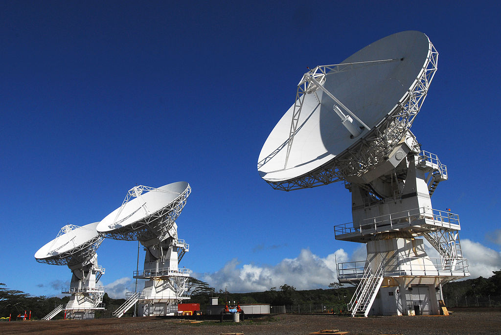

Why build a Teddy Bear when you can build a satellite!?
With Build-a-Sat you can customize a well-engineered for any communications, observational, and top-secret government need. With affordable prices and financing available for qualifying customers, we're sure that we can build you a satellite that can fulfill any purpose!
So what are you waiting for? Click here to get started!
Our satellites can perform a plethora of functions! We're like the Sonic Drive-In of satellites! We have hundreds and thousands of different satellite combinations, enough to ensure nearly any requirement that you demand.
Our Satellites have been used by hundreds of global governments and corporations such as the People's Republic of Australia, Evil Scientists, Inc., and the recent superpower Ghana.
Your fears of monitoring are salved by our satellite operations center, where highly trained gorillas are left to monitor and manage the satellites. Ample quantities of bananas ensure their loyalty.